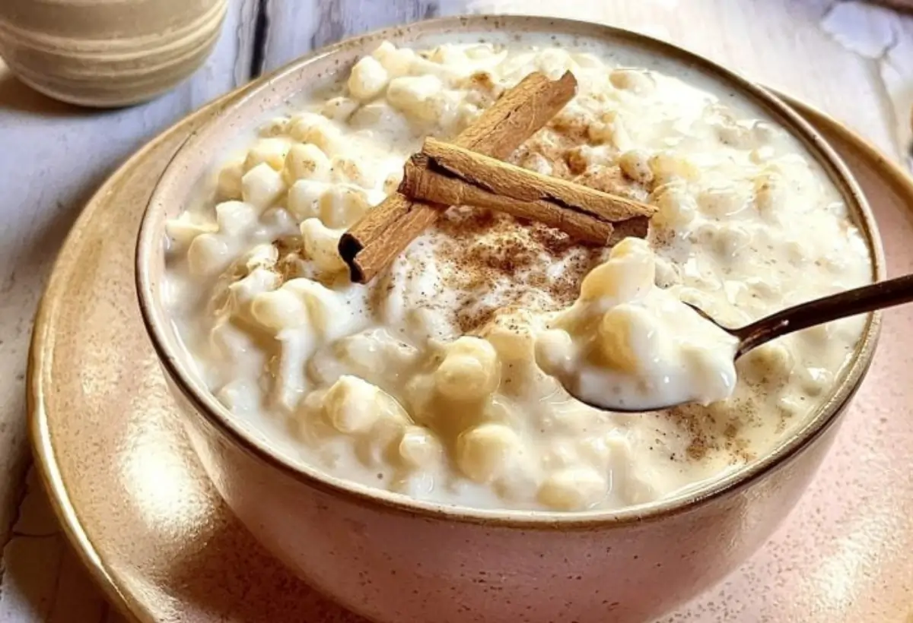
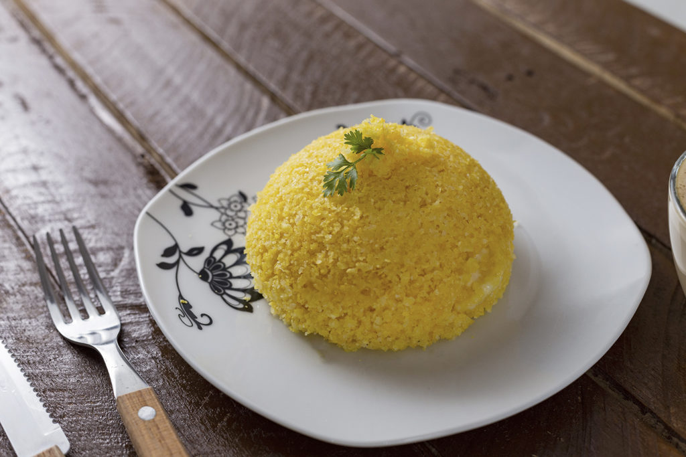
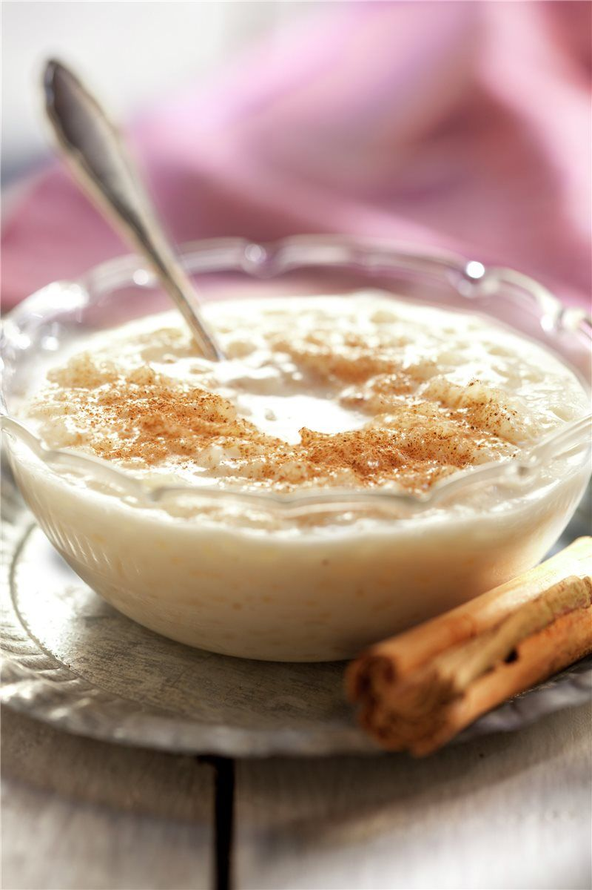

Cabeça de Cuia (Piauí)
Conta-se que um jovem chamado Crispim, após brigar com a mãe e atingi-la com um osso, foi amaldiçoado a se transformar em um monstro com uma grande cabeça. Desde então, vaga pelos rios devorando pessoas, especialmente moças chamadas Maria.

Canjica
Canjica, também chamada de mungunzá em algumas regiões, é um doce feito com grãos de milho branco cozidos com leite, açúcar, canela e coco. É igualmente típica das festas juninas e tem influência dos indígenas brasileiros e também da culinária africana colonial, que agregou o uso do leite de coco e especiarias. É símbolo de celebração e conforto nos meses de junho e julho.

Milho cozido
O milho cozido é uma forma simples e antiga de se consumir o milho, basicamente o grão cozido com água e sal. É uma comida de origem indígena, presente no Brasil desde antes da colonização, e muito comum em feiras e festas populares. Simboliza a base da alimentação e é consumido em diversas regiões do país, sendo um alimento acessível e reconfortante.

Cuscuz
O cuscuz brasileiro é diferente do de origem africana e do norte da África. Ele é feito com farinha de milho, cozida no vapor, popular no Nordeste do Brasil. O prato tem raízes indígenas com adaptações trazidas pelos africanos e portugueses, se tornando um símbolo da culinária nordestina, apreciado no café da manhã ou como acompanhamento de refeições.

Arroz doce
Arroz doce é uma sobremesa histórica trazida pelos portugueses e adaptada ao Brasil. Feito com arroz, leite, açúcar e canela, é tradicional em festas e celebrações populares no país. O prato simboliza a colonização e a mistura de culturas, sendo preparado de formas regionais e apreciado no inverno e ocasiões familiares.
